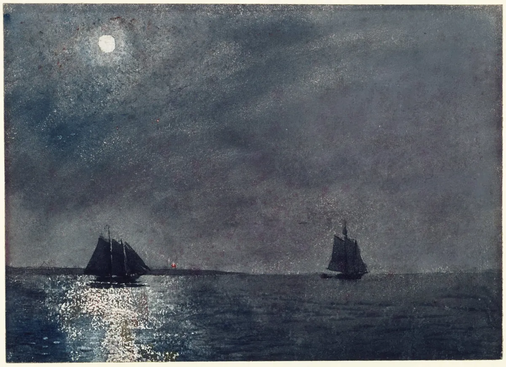

Local 2 de 9 · Winslow Homer
Ten Pound Island, a olhar para a saída do porto
Ponto de vista documentado

- Ponto de observação
- Ten Pound Island (42.60187, -70.66555).
- A olhar para
- Eastern Point Light
- Direção do olhar
- S, 178° a partir do norte verdadeiro
- Distância ao motivo
- 2.4 km (1.5 mi)
- A luz do pintor
- pôr do sol: cerca das 20:02 em 1 de agosto de 2027
Onde se colocaram
No verão de 1880, Homer hospedou-se em Ten Pound Island com o faroleiro, Oliver Merrill.169175 Princeton inclui Eastern Point Light na série «pintada por Homer em Ten Pound Island».170 Não está registado em que ponto da ilha se sentou; a linha no mapa vai do farol da ilha até Eastern Point Light, quase exatamente para sul.
A luz
Eastern Point Light é uma noite de luar: aguadas rápidas de azul para o céu, a lua cheia «raspada», a água salpicada de marcas feitas com o cabo do pincel.170 A maior parte da série são pores do sol sobre a margem ocidental;174 no início de agosto o sol põe-se a oés-noroeste, à direita do pintor quando este está virado para a boca do porto.
Pintar hoje
- A ilha pertence à cidade de Gloucester, que mantém caminhos pedonais até ao farol; os barcos particulares podem atracar, mas não há cais de desembarque. A torre é propriedade da Guarda Costeira e está fechada.175
- Sem barco, pinte a ilha e os pores do sol de Homer a partir da passagem pública de Rocky Neck, a olhar para oeste, por cima do porto.174
- O método de Homer em 1880, segundo o MFA: deixar a tinta embeber o papel, retirá-la com mata-borrão e depois aplicar pinceladas espessas e opacas.169